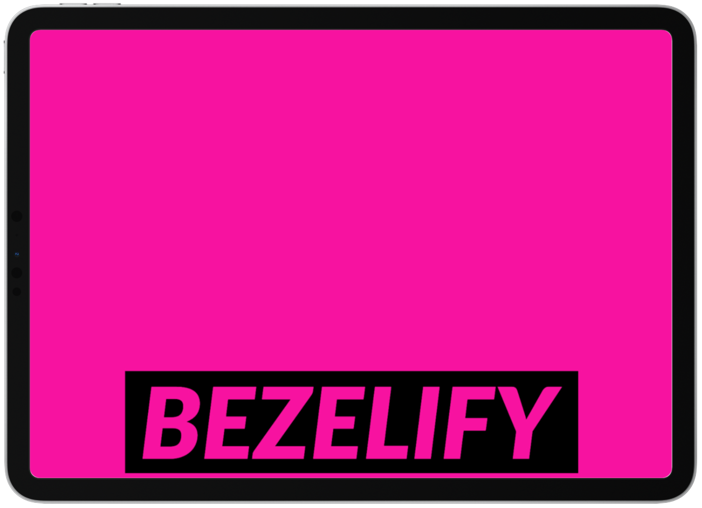

Visit the site
Bezelify is a tool to quickly upload images / screenshots to different product form factors and download the uploaded image + bezel as a single, high resolution image. It currently only supports the Macbook Air, iPad Pro, and iPhone 15. I built this as a way to display screenshots of a different personal project on a variety of product bezels.
It's a canvas based app (using FabricJS) using the Adobe Spectrum UI library. Currently hosted on Vercel.